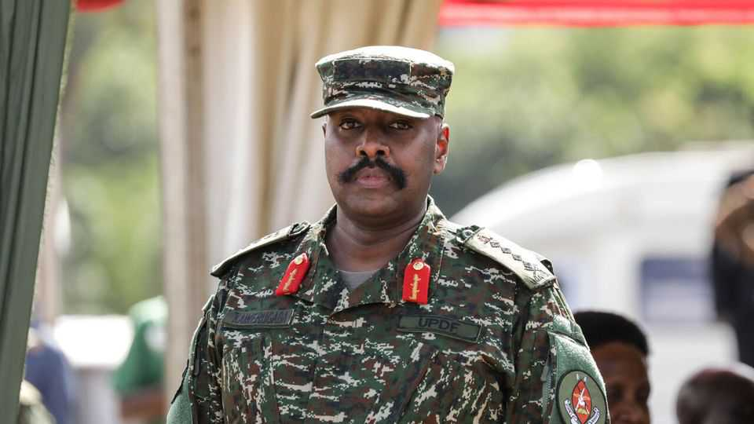

Uganda’s volatile army chief goes after the press
Muhoozi Kainerugaba, the president’s son, looks increasingly like a despot-in-waiting
July 2nd 2026

Like a digital bugle, the post went out. Then the troops rushed in. Just before midnight on June 27th Muhoozi Kainerugaba, Uganda’s army chief, announced on social media that he had decided “to close” the Daily Monitor, a newspaper, and NTV, a broadcaster. Shortly afterwards soldiers descended on the two outlets, blocking entry to staff and placing the offices under what the Monitor described as a “military siege”. “I DO NOT believe in a free press!” General Kainerugaba posted, superfluously.
No legal charges have been brought against either the Monitor or NTV. But as The Economist was published, their offices were still occupied by soldiers. General Kainerugaba initially said that the outlets, both owned by the Nation Media Group (NMG), a Kenya-based media conglomerate, would be “closed for good”. He later suggested that he would let them reopen if they changed their behaviour. On July 1st General Kainerugaba met Rostam Azizi, NMG’s owner. A pro-government newspaper wrote that they discussed “what the government deems biased and malicious reporting” by NMG’s Ugandan subsidiaries. Negotiations are continuing, according to the general. The results will be submitted to Yoweri Museveni, Uganda’s president, for “final approval”.
There, perhaps, lies the rub: General Kainerugaba is Mr Museveni’s son. Having ruled Uganda since 1986, Mr Museveni is growing old. As the father’s vigour wanes, his son is aggressively positioning himself as his successor. In May General Kainerugaba had Uganda’s speaker of parliament, one of his most powerful rivals, removed from office and placed under house arrest. In June his troops abducted the former mayor of Kampala, Uganda’s capital; the army chief boasted that he had taken his captive “to the basement”.
Perhaps the despotic behaviour is a sign that the general feels sure of his position as heir apparent. Or perhaps it is the opposite. Salim Saleh, Mr Museveni’s brother, is rumoured to regard his nephew’s antics with disquiet. Some suspect that Mr Saleh and others are frustrating General Kainerugaba’s ambitions behind the scenes, prompting him to lash out. “He is spiralling,” says one seasoned observer. “The way he sees it, it is by weaponising fear and terror that he gets power.” That suggests dark days lie ahead. ■
Sign up to the Analysing Africa, a weekly newsletter that keeps you in the loop about the world’s youngest—and least understood—continent.